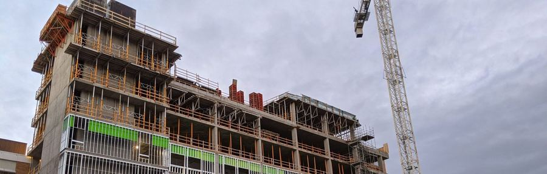

İnşaat danışmanlığıarsa, eski bina, yeni yapı
Arsanız, eski bir binanız ya da yarım kalmış bir dönüşüm süreciniz mi var? Kat karşılığı görüşmelerinden iskâna kadar her aşamanın bir belgesi, bir sırası ve dikkat edilecek bir noktası var. Önce dosyanızın hangi aşamada olduğunu birlikte okuyalım.
Danışmanlık konuları
Projelerde ayrıntılar "detay balonu" ile işaretlenir. Bunlar da bizim detaylarımız: birlikte konuşabileceğimiz başlıca konular. Sizin durumunuz bunlardan birine tam uymuyorsa sorun, bilgi verelim.
Kat karşılığı (arsa payı karşılığı inşaat)
Arsa sahibinin arsa payını, yüklenicinin ise yapımı üstlendiği model. Paylaşım oranı, teslim süresi, teminatlar ve hangi bağımsız bölümün kime düşeceği sözleşmenin omurgasıdır.
Soru listesini hazırlayınKentsel dönüşüm
Riskli yapı tespitinden yeni binada kat mülkiyetine uzanan süreç. Malikler arasında uzlaşma ve adımları doğru sırayla atmak işin yarısıdır.
Yol haritasını görünKat irtifakı ve kat mülkiyeti
Henüz tamamlanmamış yapıda kat irtifakı, iskânı alınmış yapıda kat mülkiyeti kurulur. Geçişin ne zaman ve kimin sorumluluğunda yapılacağı baştan konuşulmalı.
Farkı okuyunYapı ruhsatı ve iskân
Proje onayı, yapı ruhsatı, yapı denetimi ve yapı kullanma izin belgesi (iskân). Hangi belgenin hangi aşamada alındığını takip etmek, ileride yapılacak satışları da kolaylaştırır.
İskân neden önemliİmar durumu ve emsal
Parselinize ne kadar yapı yapılabileceğini imar planı belirler. TAKS, KAKS (emsal), çekme mesafeleri ve kat sınırı birlikte okunur.
Emsal hesaplayıcıyı deneyinProje ve plan okuma
Mimari projeyi, vaziyet planını ve kat planlarını birlikte okuyup size düşen bağımsız bölümün yerini, cephesini ve özelliklerini anlaşılır hâle getiririz.
Plan okuma rehberiEmsal hesaplayıcı: parselde ne kadar yapı?
İmar durumu belgesinde yazan TAKS ve KAKS (emsal) değerlerini girin; taban alanını ve toplam emsal alanını kabaca görün. Değerler örnektir; kendi parselinizin değerlerini belediyeden alınan imar durumunda bulursunuz.
TAKS, yapının zemine oturan alanının parsel alanına oranıdır. KAKS ise emsale dahil toplam inşaat alanının parsel alanına oranıdır.
Emsal alanı, taban alanı ölçüsünde yaklaşık 4,0 kata yayılabilir.
Bu hesap kabadır. Plan notlarındaki kat ve yükseklik sınırı, çekme mesafeleri, emsal dışı tutulabilen alanlar (yönetmelikte sayılır ve sınırlıdır), bodrum ve çatı kullanımı sonucu değiştirir. Kesin bilgi için imar durumu belgesi ve bir mimarla birlikte değerlendirin.
Kentsel dönüşüm: genel yol haritası
6306 sayılı Afet Riski Altındaki Alanların Dönüştürülmesi Hakkında Kanun kapsamında riskli yapılar için izlenen genel sıra aşağıdadır. Uygulama ayrıntıları değişebilir; her adımda güncel bilgiyi ilgili kurumdan ve hukukçunuzdan teyit edin.
Riskli yapı tespiti
Malik ya da kanuni temsilcisi, Çevre, Şehircilik ve İklim Değişikliği Bakanlığınca lisanslandırılmış bir kuruluşa başvurur; bina incelenir ve rapor hazırlanır.
Rapor ve tapu şerhi
Rapor ilgili idarece incelenir; riskli yapı olduğu tapu kaydına işlenir ve maliklere bildirilir. İtiraz yolu ve süresi bildirimde yer alır.
Malikler toplantısı
Yeni yapı için maliklerin bir araya gelip karar alması gerekir. Kanun, kararın hisseler oranında belirli bir çoğunlukla alınmasını öngörür; güncel koşulları bir hukukçuyla teyit edin.
Yüklenici ve sözleşme
Teklifler aynı teknik şartnameye göre karşılaştırılır; paylaşım, teslim süresi, teminatlar ve şartname yazılı hâle getirilir.
Tahliye ve yıkım
Bina tahliye edilir, yıkım süreci tamamlanır. Bu dönemde koşullara bağlı olarak kira yardımı gibi destekler gündeme gelebilir.
Proje ve yapı ruhsatı
Yeni proje belediyeye onaylatılır, yapı ruhsatı alınır; projeye göre kat irtifakı kurulur.
İnşaat ve denetim
Yapım süresince yapı denetim kuruluşu işi denetler; malikler ya da seçtikleri temsilci ilerlemeyi takip eder.
İskân ve kat mülkiyeti
Yapı tamamlanınca yapı kullanma izin belgesi alınır, kat irtifakı kat mülkiyetine çevrilir ve tapular bağımsız bölüm olarak düzenlenir.
Kat karşılığı sözleşmesi: masaya gelmesi gereken başlıklar
İyi bir sözleşme, sonradan çıkabilecek tartışmaları baştan yazıya döker. Konuşmak istediğiniz başlıkları işaretleyin; görüşmeye hazırlıklı gelmeniz için listeniz mesaj olarak hazırlansın.
MESAJINIZönizleme
Merhaba İmser Gayrimenkul, kat karşılığı / kentsel dönüşüm konusunda görüşmek istiyorum.
Bu liste bir hatırlatmadır, sözleşme taslağı değildir. Sözleşmeyi imzalamadan önce mutlaka bir avukata inceletin.
Kat irtifakından kat mülkiyetine
Aynı binanın iki hâli: biri kâğıt üzerinde tarif edilen, diğeri tamamlanıp kullanıma açılan. Aradaki köprü iskândır.
Yapım sürerken: kat irtifakı
- DAYANAK
- Onaylı proje ve arsa payları. Bağımsız bölümler projede tarif edilir.
- TAPUDA
- Kat irtifaklı bağımsız bölüm olarak görünür.
- SORUN
- Ruhsat tarihi, yapı denetim kuruluşu ve iskân için öngörülen takvim.
Yapı bitince: kat mülkiyeti
- DAYANAK
- Yapı kullanma izin belgesi (iskân) ve tamamlanmış yapı.
- TAPUDA
- Kat mülkiyetli bağımsız bölüm olarak görünür.
- SORUN
- Geçişin yapılıp yapılmadığı ve yönetim planının kaydı.
İskân neden önemli?
- MÜLKİYET
- İskân alınmadan kat mülkiyetine geçilemez.
- KREDİ
- Bankalar iskânı olmayan konutlarda kredi vermekte zorlanabilir.
- ABONELİK
- Kalıcı su, elektrik ve doğal gaz aboneliklerinde iskân istenebilir.

Parselinizin kimliği
Her taşınmazın tapuda bir ada ve parsel numarası vardır. Bu numaralar, imar durumundan riskli yapı başvurusuna kadar her işlemin anahtarıdır.
- Ada ve parsel: tapunuzda yazar. Tapu ve Kadastro Genel Müdürlüğünün parsel sorgulama uygulamasıyla parselin konumunu haritada görebilirsiniz.
- İmar durumu: parselin hangi amaçla ve ne yoğunlukta yapılaşabileceğini gösterir; taşınmazın bulunduğu belediyeden alınır. Bazı belediyeler çevrim içi sorgulama da sunar.
- Plan notları: kat sınırı, çekme mesafeleri ve özel koşullar burada yazar; emsal hesabını doğrudan etkiler.
- Mevcut belgeler: eski ruhsat, onaylı proje ve varsa iskân belgesi; belediye arşivinden istenebilir.
Sık sorulanlar
Kat karşılığında paylaşım oranı nasıl belirlenir?
Arsanın konumu, emsali, yapım maliyetleri ve piyasa koşulları belirler; herkese uyan sabit bir oran yoktur. Teklifleri aynı teknik şartnameye göre karşılaştırmak, oranı anlamlı kılar.
Binamızın riskli olup olmadığını nasıl öğreniriz?
Bakanlıkça lisanslandırılmış kuruluşlara başvurarak riskli yapı tespiti yaptırabilirsiniz. Tespitin sonucunu ve sonraki adımları birlikte değerlendirebiliriz.
Bütün malikler anlaşmazsa ne olur?
Kanun, belirli bir çoğunlukla karar alınmasına imkân tanır ve azınlıkta kalan payların durumunu ayrıca düzenler. Hukuki sonuçları olduğu için bu konuda mutlaka bir avukata danışın.
Elimde yalnız tapu var; nereden başlamalıyım?
Tapudaki ada ve parsel bilgisiyle belediyeden imar durumunu öğrenmek ilk adımdır. Ardından mevcut yapının ruhsat ve proje bilgilerini toplarız; tablo netleşince seçenekleri konuşuruz.
Bu sayfadaki bilgiler geneldir ve bilgilendirme amaçlıdır. Hukuki, vergisel ve teknik kararlar için avukat, mali müşavir, harita ya da inşaat mühendisi, belediye ve tapu müdürlüğü ile görüşün.
Dosyanızı birlikte okuyalım.
Tapu, imar durumu, varsa rapor ve teklifler. Elinizdekileri getirin; hangi aşamada olduğunuzu ve sıradaki adımı konuşalım.